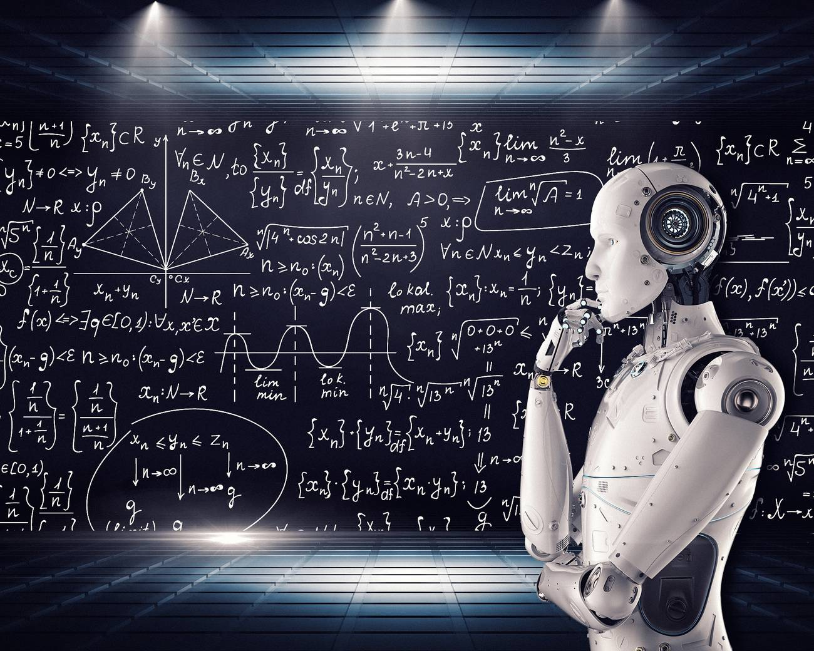

La Inteligencia artificial en "ciencias de la computación"; es la disciplina que intenta replicar y desarrollar la inteligencia y sus procesos implícitos a
través de computadoras. No existe un acuerdo sobre la definición completa de inteligencia artificial, pero se han seguido cuatro enfoques: dos centrados en los humanos
(sistemas que piensan como humanos, y sistemas que actúan como humanos) y dos centrados en torno a la racionalidad (sistemas que piensan racionalmente y sistemas que actúan racionalmente).

La Inteligencia Artificial abarca en la actualidad una gran variedad de subcampos, que van desde áreas de propósito general, como el aprendizaje y la percepción, a otras más específicas como el juego de ajedrez, la demostración de teoremas matemáticos, la escritura de poesía y el diagnóstico de enfermedades.
La Inteligencia Artificial sintetiza y automatiza tareas que en principio son intelectuales y es, por lo tanto, potencialmente relevante para cualquier ámbito de la actividad intelectual humana.